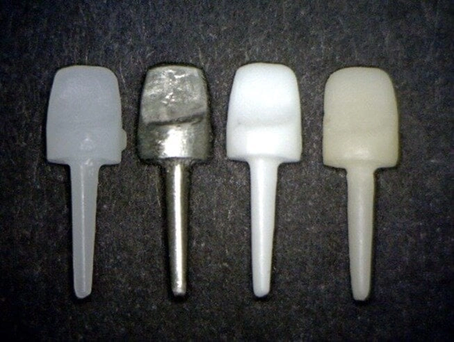

نسخه استخراجشده؛ ترجمه یا تأیید علمی انجام نشده است. وضعیت: captured
پست فلزی زیر روکش تمامسرامیک ترنسلوسنت میتواند سایهی خاکستری بدهد. پست و کور زیرکونیا برای حل همین مشکل زیبایی ساخته شد؛ با این حال امروز عملاً در کلینیک دیده نمیشود. چرا؟

سفتی: مدول الاستیسیتهی زیرکونیا هماندازهی آلیاژهای بیس متال و حدود ده برابر عاج است؛ پس استرس را به ریشه منتقل میکند و شکستها معمولاً از نوع شکست ریشه هستند.
شکنندگی: فلز زیر بار خم میشود، زیرکونیا بدون هشدار یکباره میشکند، مخصوصاً در قطرهای کم. اگر داخل کانال بشکند یا دندان به درمان ریشهی مجدد نیاز پیدا کند، خارج کردن آن دشوار است.
با سمان کانونشنال میشود آن را سمان کرد، ولی قدرت باند کمتر است. انتخاب منطقی سمان رزینی است، با سندبلاست ملایم آلومینا و پرایمر یا سمان حاوی MDP. اسید هیدروفلوئوریک و سایلن روی زیرکونیا اثر ندارند.
فایبر پست مدول نزدیک به عاج دارد، شکستهایش بیشتر قابل جبران است، امکان درمان مجدد را حفظ میکند و همان نتیجهی زیبایی را هم میدهد. در کانالهای با شکل و قطر معمول، دلیلی برای انتخاب زیرکونیا باقی نمیماند.
در کانالهای گشاد، بیضی یا فلیرشده که فایبر پست تطابق ندارد، پست ریختگی انتخاب بهتری است: سفتی آن مشابه زیرکونیاست، ولی شکننده نیست، با سمان کانونشنال گیر خوبی میگیرد و قابل خارج کردن است.
شرط تعیینکننده در همهی حالتها حدود ۲ میلیمتر فرول (حلقهی عاجی) است. پست دندان را تقویت نمیکند، فقط کور را نگه میدارد.